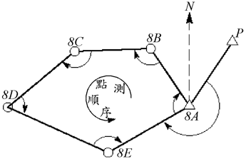
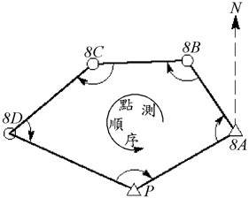
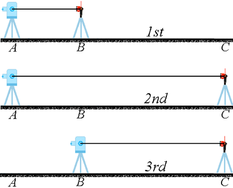

應注意以下幾點：(1)相鄰測站可通視、可量距；(2)測點穩固，且擺設儀器後，展望良好；(3)測站方便可及，可有效控制測區；(4)邊長大致相等。
點選妥後，標記編號於實地，並利用RTK-GPS測得其XYZ坐標(採TM2坐標系統)，此即控制測量；並繪略圖於記錄紙。給點號時，應逆時編號，如左下圖之閉合導線；圖中，為控制點，為待測之導線點；控制點亦可併入閉合導線內，如右下圖示
 正鏡與倒鏡各測一次，稱一測回；應順時測水平內角二測回，並取其平均值。如右上圖，若測站為8B，先後視點8A，再前視點8C，8C方向讀數減去8A方向讀數，即得水平角ABC。若測站為控制點，為求算測站與下一測點的方位角，應加測連接角，如左上圖中之PAE；在點8A擺設儀器後，可採方向觀測法，正鏡、倒鏡各測P、8E、8B、P一次，相鄰方向相減，並取正倒鏡平均值，即可求得PAE與EAB。
利用全測站儀器量距，應於室內先檢測稜鏡常數K；如下圖，於平坦地上，設定同一線上之A、B、C三點，AB與BC不必等長。首先測AB長，次測AC長，再測BC長，注意儀器與稜鏡應精確定心定平。因可假設：(AB+K)+(BC+K)=AC+K，故可根據AB、AC、BC之觀測值，求得：K = AC-(AB+BC)。 亦可採用簡便方式，如下圖，首先利用鋼捲尺精密量測AC長，再利用全測站儀器與稜鏡測得AC'長；假設AC較接近真值，則AC'+K=AC，或K=AC-AC'。 若K<=3 mm，通常可視之為儀器常數或比例差，或儀器與稜鏡之定心誤差，可忽略不計；否則即輸入至全測站儀器，每次且借用同一組合之儀器與稜鏡。
應觀測任兩相鄰點間之平距(在全測站儀器之LCD面板上，通常顯示為HD)，往測、返測至少各測一回；如前頁圖在點8B擺站時，應測8B->8A之平距(返測)與8B->8C之平距(往測)；在點8C擺站時，應測8C->8B之平距(返測)與8C->8D之平距(往測)。對閉合導線而言，測回至起點時，每段邊長至少已測兩次，各自取平均值，可檢視其精密度。
所有內角和應等於(n-2)*180，式中，n為邊的個數，計算角度閉合差如下式：fA=內角和-(n-2)*180，角度閉合差應小於K*(n)**1/2；K暫訂為30"，譬如觀測一個四邊形，fA應小於60"，否則應重測。若導線某一邊長之兩端均為控制點，仍應測距，此為檢核測距儀是否有系統誤差，或檢核控制點是否已有變動；若檢測結果與利用二控制點反算之邊長的差異在容許範圍內 (暫訂為 1/10,000)，則視控制點沒有變動，而後仍根據控制點原有的坐標資料，來計算導線點之坐標。若檢測結果之差異超過容許範圍，則應再謹慎測距一次。